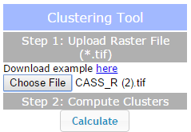
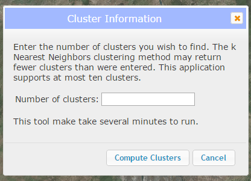
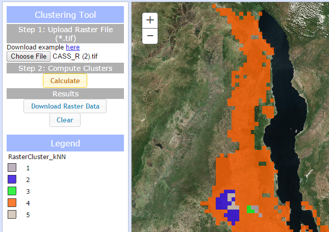

This application performs k Nearest Neighbor clustering to find clusters in raster TIFF files. For more information on k Nearest Neighbor clustering, please click here.
Clustering Tool
Step 1
Click the "Choose File" button and navigate to a TIFF raster file (with an extension .tif).
Step 2
Click "Calculate" and a popup will appear. Enter the number of clusters you wish to calculate (between 2 and 10). The application may return fewer clusters than requested if the data does not support the requested number of clusters. Click "Compute Clusters".
Results
After a short time, the map should display your clustered layer. Each color represents a different cluster. You may download a TIFF file with your results by clicking "Download Raster Data" or clear the map to begin with a new dataset by clicking the "Clear" button.
Legend
The legend will automatically populate after you calculate clusters in your data.
Basemap picker
Click the basemap button to toggle between the topographic basemap and a satellite imagery basemap.